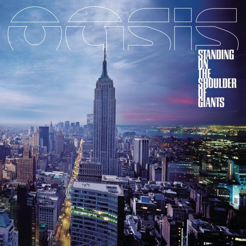

ALBUMS
4TH. Standing on the Shoulder of Giants
2000년 2월 28일에 발매된 오아시스의 정규 4집 앨범. 앨범의 제목은 2파운드짜리 동전에 새겨진, 아이작 뉴턴의 "If I can see further than anyone else, it is only because I am standing on the shoulders of giants."라는 구절에서 따왔다. Be Here Now때부터 시작되었던 오아시스의 슬럼프는 이 때부터 본격적으로 시작된다. 이 때를 기점으로 리암의 목소리가 허스키하게 변했고 노엘의 음악은 보다 실험적으로 변하였다.
1. Fuckin’ In The Bushes
오아시스의 몇 안되는 연주곡. 이 곡이 나온 이후로 오아시스 라이브 공연의 오프닝은 이 곡이었다. 이 곡에 대한 설명은 곡에 관련된 노엘의 인터뷰를 인용하는 것으로 대체한다. 참고로 이 곡 때문에 미국 월마트에서는 앨범 보이콧을 하기도 했으며 한국에서는 앨범에 19세 미만 청취불가 딱지가 붙어 발매되었다. 아래는 곡에 삽입된 샘플의 원본.
2. Go Let It Out
4집 곡 중 처음으로 발매된 싱글곡으로 UK 싱글 차트 1위를 기록했다. 전형적인 오아시스 트랙이지만 어쿠스틱 기타와 멜로트론, '폴 매카트니 풍' 베이스 라인이 두드러지는 등 변화가 드러난다.
3. Who Feels Love?
4집 두번째 싱글곡. 싱글 차트 4위 기록. 곳곳에 콜라주된 전자음과 토속적인 퍼커션 리듬 등이 인도를 연상시키는 음악으로 여러가지로 리볼버 시대의 비틀즈의 곡들을 연상시킨다. 곡의 가사도 태양과 사랑을 노래하는 등 다소 히피스럽다. 노엘이 타이에 있을 무렵 어느 날 새벽에 쓴 곡이라고. 전체적으로 사이키델릭한 색채가 짙은 곡으로, 라이브 버전으로는 기타가 더욱 도드라져 조금 다른 느낌으로 연주된다.
4. Put Yer Money Where Yer Mouth Is
데모 녹음 중 사고로 얻은 키보드 리프에서 시작한다. 거기에 코드 변화를 주고 펑키(Funky)한 키보드 노이즈와 베이스를 얹어서 2, 3시간 안에 완성한 곡. 그러나 도어즈의 Roadhouse Blues와의 유사성이 지적된다. 가사는 여전히 의미 없는, 그러나 오아시스치곤 꽤나 부정적인 내용과 구절만이 반복된다.
5. Little James
리암 갤러거의 곡 중 처음으로 오아시스의 앨범에 실린 곡. 아내 팻시 켄시트(Patsy Kensit)와 전 남편 사이의 아들 제임스를 위해 쓴 곡이라고 한다. 전주부터 Imagine 피아노 전주로 시작하고 끝무렵에 가서는 대놓고 Hey Jude스러운 나나나나나~하는 코러스를 부른다. 앨범 발매 이후에는 가장 약한 트랙으로 꼽히곤 하는 수모를 겪는다. 여기에 리암은 "만약에 누가 그걸 깐다면, 걔네는 심장이 없거나 존나 인생의 의미가 뭔지도 모르는거야"라고 말하기도 했다.
6. Gas Panic!
노엘 갤러거가 마약, 특히 코카인으로 인해 외로움과 편집증, 신경쇠약 등 각종 후유증에 시달릴 무렵에 쓴 곡. 당시의 모습을 통틀어 노엘의 가장 내밀하고 어두운 구석이 반영된 곡이다. 실제로 노엘은 1, 2집 시절에 엄청나게 마약을 한 후유증으로 공황장애에 시달려 마약을 그만두었음에도 불구하고 계속해서 정신과 치료를 받아야 했다. 일부 사람들은 Sunday Morning Call 대신에 Gas Panic!이 싱글로 발매되었어야 한다고 주장하기도 하는 등 여러모로 숨겨진 매니아들이 있는 곡이기도 하다. 거칠게 변한 리암의 목소리와 어우러져 그야말로 오아시스 곡 중 제일 레드 제플린에 가까운 곡이 되었다.
7. Where Did It All Go Wrong
4집 네번째 싱글곡. 정식으로 발매된 것은 아니고 미국 라디오 프로모션 용으로 제작되었다. 노엘은 이 곡을 두고 "가사는 나의 런던 시절, 사람들이 하도 많이 몰려와서 나이트클럽에 사는 것 같았는데, 거기서 만난, 알고 보면 징징대는 한심한 작자들인 내 유명 인사 친구들에 대한 약간의 비꼼을 담은 것이다."라고 말했다. 뮤직 비디오의 내용도 바보같은 인터뷰를 하는 밴드와 멀찍이 떨어져서 옆 건물을 지켜보는 노엘의 모습이 대조되면서 곡의 가사와 비슷한 느낌을 담았다.
8. Sunday Morning Call
4집 세번째 싱글곡. 싱글 차트 4위 기록. 노엘이 말하기를 "특정 인물이 모델이다. 멋진 사람이지만 마음껏 인생을 살다 맞은 몰락을 감당 못해 항상 투덜거리는. 누군지는 밝힐 수 없다." Don't Look Back In Anger 이후로 노엘이 부른 곡이 싱글컷된 것은 이 앨범이 두번째. 뮤직 비디오는 잭 니콜슨의 영화 <뻐꾸기 둥지 위로 날아간 새> 속 장면을 따온 영상에 밴드가 출연해 캐릭터들을 지켜보는 컨셉.
9. I Can See A Liar
리암이 수록곡 중 제일 좋아하는 곡이라고 한다. 원래는 앨범에 들어갈 예정이 아니었으나 리암이 노엘에게 "좀 더 빠른 템포의 곡도 넣어야 한다"고 제의하여 들어가게 되었다고 한다. 노엘 본인도 이 곡과 Put Yer Money Where Yer Mouth Is는 가사가 실망스럽다고 언급하였다.
10. Roll It Over
이 곡에 대해 노엘이 말하기를 "예전에 사람들이 내게 와서는 이러니저러니 떠들어댔던 가십에 관한 노래인데, 내가 가장 아끼는 곡이다. 약간 감정을 고조시키는 가스펠 풍. 이것이 우리가 갈 방향이다. 좀 더 가스펠적이고, 좀 더 그루비한, 좀 더 사이키델릭한." 고요하고 어두운 분위기로 시작해 나중에 가서는 그의 말처럼 웅장한 오케스트라에 가스펠 풍 코러스가 더해지는 아웃트로가 인상적이다. 이 곡 이후로 가스펠 풍 코러스의 사용은 Heathen Chemistry 시기의 노엘 곡들에서도 이어지며 그 이후로도 계속 노엘의 작곡 스타일에서 종종 드러난다.
+) Let's All Make Believe
Go Let It Out의 B사이드이자, SOTSOG 일본반 보너스 트랙이기도 한 Let's All Make Believe는 팬들과 평론가들 사이에서 숨겨진 보석같은 곡으로 평가되곤 한다. Q 매거진은 '잃어버린 명곡 500선' 리스트를 발표하면서 이 곡을 1위로 뽑았으며, 별점 4점을 주면서 "만약 이 곡이 Standing On The Shoulder Of Giants에 정식으로 포함되었으면, 별점 하나가 더 추가되었을 것"이라는 코멘트를 덧붙이기도 했다.